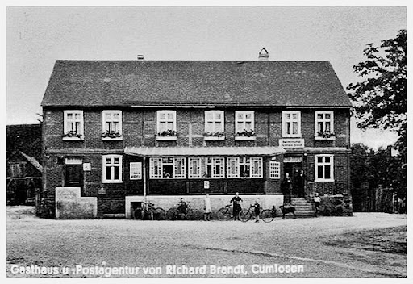
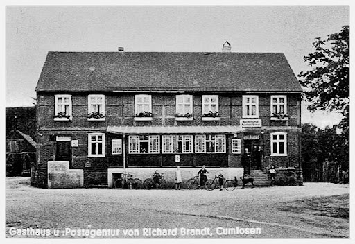

Herzlich willkommen im Landgasthof im
Biosphärenreservat Flusslandschaft Elbe!
Machen Sie einen kleinen Streifzug durch unser Haus im idyllischen Cumlosen – direkt am Elberadweg und mitten in der einzigartigen Natur der Prignitz. Verschaffen Sie sich einen Eindruck von unserem liebevoll geführten Landgasthof und unseren vielfältigen Angeboten.
Sie sind mit dem Rad unterwegs und suchen eine gemütliche Unterkunft mit gutem Abendessen und Frühstück? Oder möchten Sie einfach dem Alltag entfliehen und Ruhe und Erholung zu fairen Preisen genießen?
Dann sind Sie bei uns genau richtig.
Wir sind ein familiengeführter Betrieb inmitten der Elbtalaue – nur wenige Meter hinter dem Elbdeich, an der ehemaligen innerdeutschen Grenze. Genießen Sie bei uns Natur, Gastfreundschaft und regionale Küche in herzlicher Atmosphäre.
Unser Angebot:
-Gutbürgerliche Küche
-Fünf Doppelzimmer mit Dusche/WC
-Ein Appartement mit Küche, Dusche/WC
-Kleine und große Räume für Feiern
-Saal für bis zu 180 Personen
-Biergarten auf dem Hof
-Catering und Partyservice
-Kanu- und Kayakvermietung, Stehpadler Service

 
